Conteúdos consumidos com frequência ou marcantes
- Filmes/Séries
- Alien: O Oitavo Passageiro (Filme)
- Alien: O Resgate (Filme)
- Breaking Bad (Série)
- Como Treinar o Seu Dragão (Filme/Trilogia)
- Dexter (Série)
- Game of Thrones (Série)
- House of the Dragon (Série)
- John Wick (Filme/Trilogia)
- Jogos
- Call of Duty: Advanced Warfare - Xbox 360
- Call of Duty: Black Ops II - PS2
- Crash of the Titans - PS2
- God of War (2018) - PC
- Hearthstone - PC
- Mario Bros - PS2
- Mario Kart - Wii
- Marvel's Spider-Man - PC
- Marvel's Spider-Man: Miles Morales - PC
- Minecraft - PC/Xbox 360
- Overwatch - PC
- Plants vs. Zombies: Garden Warfare - Xbox 360
- PlayerUnknown's Battlegrounds - PC
- Resident Evil Biohazard - PC
- Resident Evil Village - PC
- Rocket League - PC
- Shadow of the Colossus - PS2
- Sonic the Hedgehog 2 - Super Nintendo
- Star Wars Jedi: Fallen Order - PC
- Star Wars Jedi: Survivor - PC
- StarCraft II - PC
- Subnautica - PC
- Subnautica: Below Zero - PC
- Super Mario Bros - Wii
- Animes/Mangás
- Akame ga Kill (Anime)
- Baki (Anime)
- Bakugan (Anime)
- Black Clover (Manga)
- Bleach (Anime)
- Death Note (Anime)
- Hunter x Hunter (Anime)
- Jujutsu Kaisen (Anime)
- Kimetsu no Yaiba (Anime)
- Naruto (Anime)
- One Piece (Anime)
- Shuumatsu no Valkyrie (Manga)
- Solo Leveling (Manga)
- Tougen Anki (Manga)
- Músicas
- 21 Guns - Green Day
- A Deathless Song - Parkway Drive
- A Little Piece of Heaven - Avenged Sevenfold
- Break - Three Days Grace
- Burn - Three Days Grace
- Burn It Down - Avenged Sevenfold
- Buried Alive - Avenged Sevenfold
- Darker Still - Parkway Drive
- Duality - Slipknot
- Everlong - Foo Fighters
- Everything Ends - Slipknot
- Father - Sabaton
- Figure.09 - Linkin Park
- Given Up - Linkin Park
- Gone Forever - Three Days Grace
- Heavy Is the Crown - Linkin Park
- Home - Three Days Grace
- I'm Hated - Slipknot
- Left Behind - Slipknot
- Monster - Skillet
- Nightmare - Avenged Sevenfold
- One-X - Three Days Grace
- Over and Over - Three Days Grace
- Pain - Three Days Grace
- Painkiller - Three Days Grace
- Prey - Parkway Drive
- Resist and Bite - Sabaton
- Rise Up - Sum 41
- Roads Untraveled - Linkin Park
- Runaway - Linkin Park
- Screaming Bloody Murder - Sum 41
- Sleight of Hand - Parkway Drive
- Smoking Snakes - Sabaton
- Stained - Linkin Park
- Still Waiting - Sum 41
- Stormtroopers - Sabaton
- The Attack of the Dead Men - Sabaton
- The Devil in I - Slipknot
- The Emptiness Machine - Linkin Park
- The Greatest Fear - Parkway Drive
- The Last Stand - Sabaton
- The Lost Battalion - Sabaton
- The Unforgiven - Metallica
- The Void - Parkway Drive
- There's No Solution - Sum 41
- Time Won't Wait - Sum 41
- Times Like These - Foo Fighters
- Turning Away - Sum 41
- Two-Faced - Linkin Park
- Victim - Avenged Sevenfold
- Wake Me Up When September Ends - Green Day
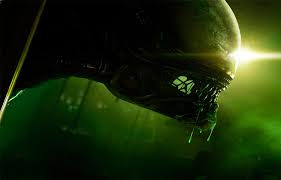
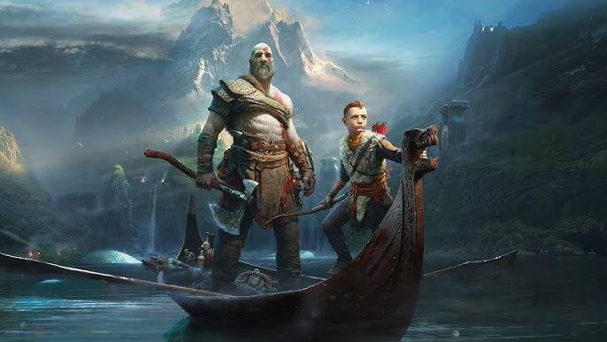
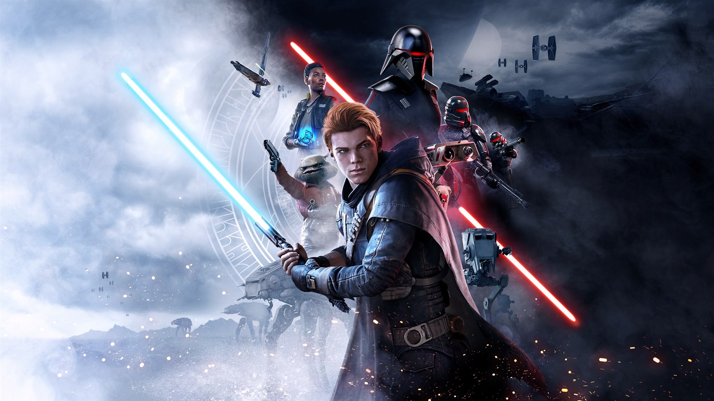
 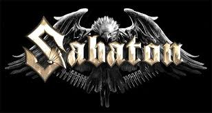
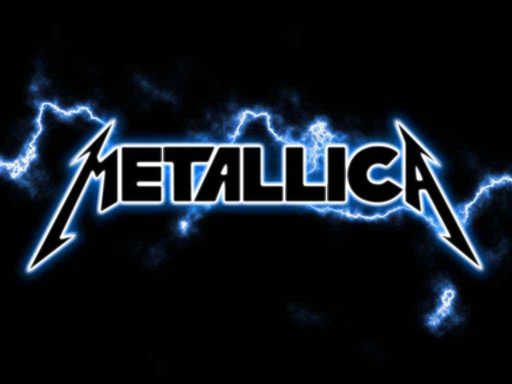
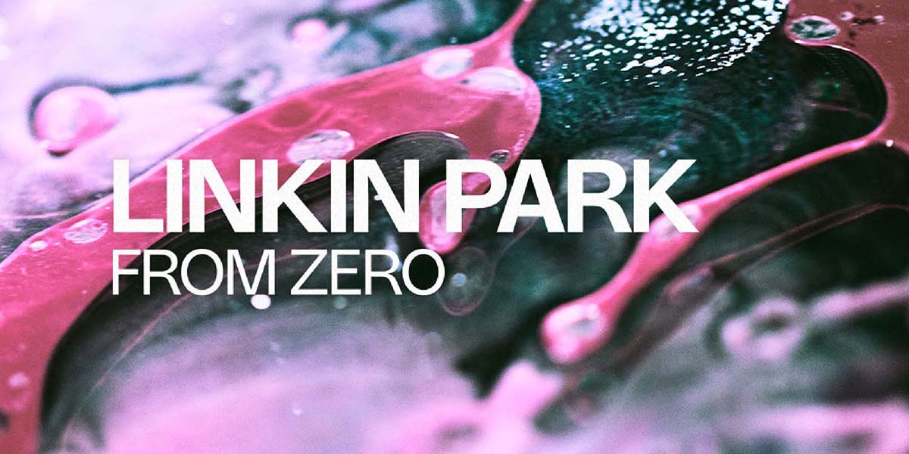
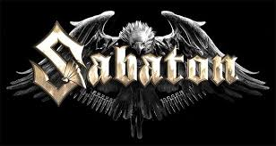
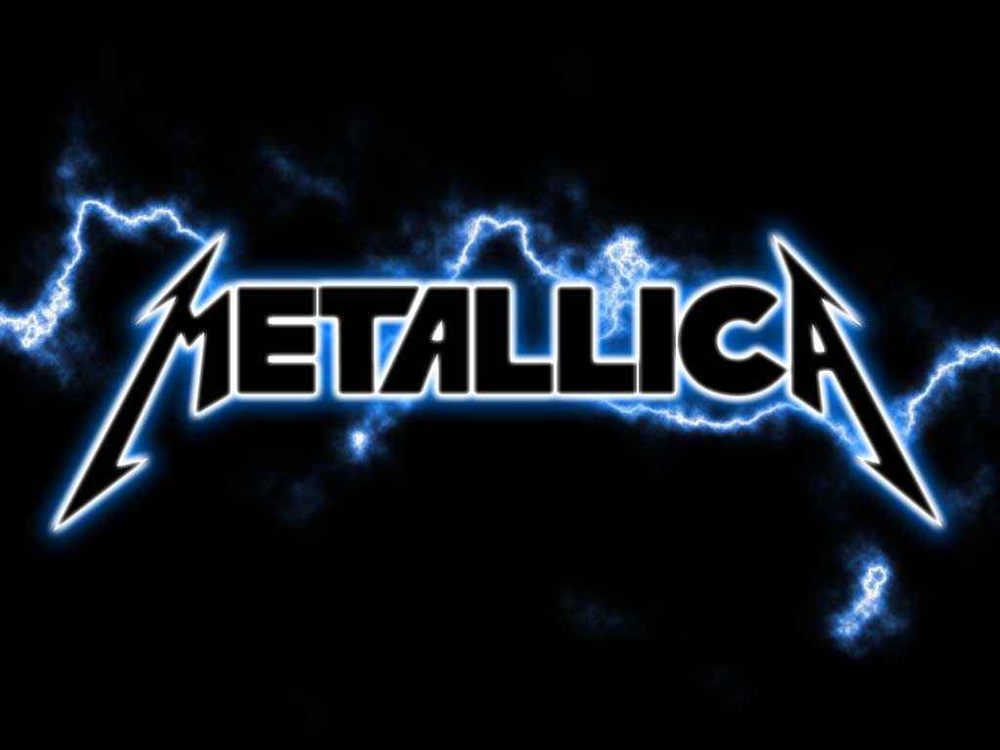
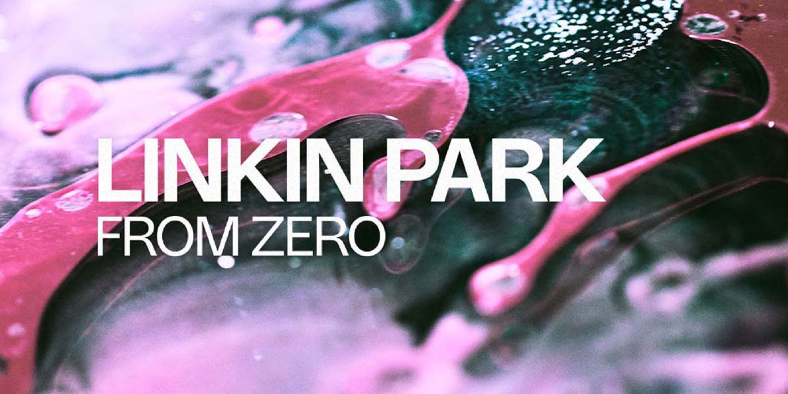
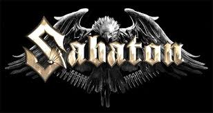
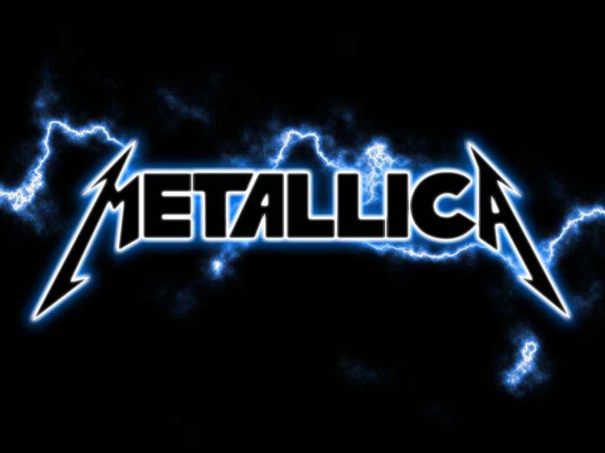
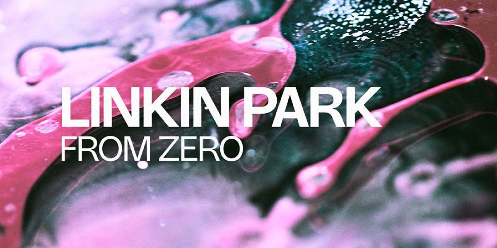